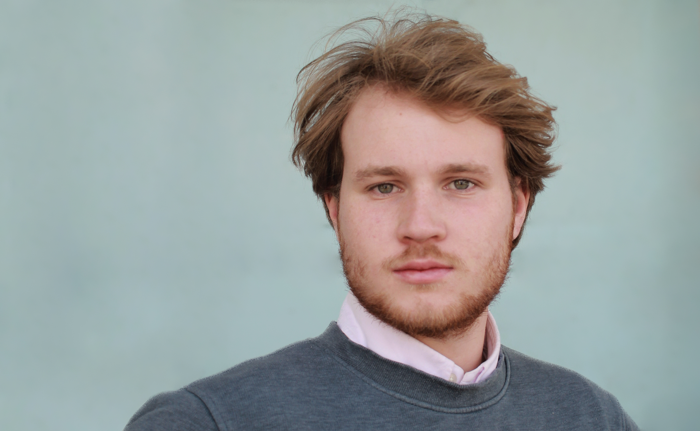

Born and raised in Vienna, currently living in Zürich.
In my free time I like to code, tinker with electronics,
design and make furniture, and generally I enjoy all
types of DIY/maker projects. I am also interested in
(FPV) Drones, IoT Prototyping, CAD/CAM, 3D Printing,
Cycling and Tennis.
BENEDICT ARMSTRONG
Education
- B.Sc. Computational Science and Engineering, ETH Zürich, 2021 —
- B.Sc. Software & Information Engineering, Vienna University of Technology, 2019 — 2021 (switch to ETH)
- Bundesrealgymnasium BRG 19 Krottenbachstraße Vienna, 2010 — 2018
Experience
-
Founded Armstrong Systems, consulting work for
clients in Zürich 2022 —
Developing a System for clients to manage Sustainabiloty Reports of companies, enabling better investing and
-
Teaching assistant for Computer Science II,
Department of Computer Science, ETH Zürich,
September 2022 —
Course deals with the the design and analysis of algorithms.
-
Teaching assistant and Developer, Research group
for Industrial Software, Vienna University of
Technology, Spring 2021
Developing a CTF Platform and Challenges for Students and helping to organise Event
- Paramedic (civil-service) Samariterbund, Vienna, 2018 — 2019
- Summer job at the Austrian Post, Vienna, Summer 2018
- Summer job at Tecton Consult, Vienna, Summer 2017
- Bike courier for Foodora, Vienna, 2016 — 2017
Languages and Skills
- English and German, bilingual
- Java, Python, C, C++, JavaScript, PHP, Angular, React, NextJS, Svelte(Kit), FastAPI, REST, HTML, CSS, SQL, Mongo, Postgres, Docker, Git, Scrum and Arduino/ESP8266/32 based Hardware development